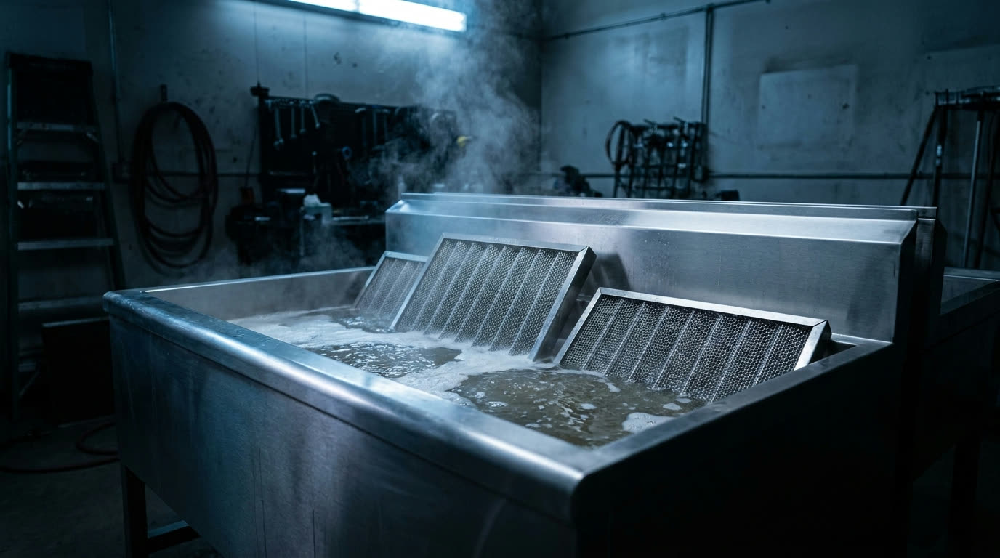

Filters restored. Airflow recovered.
Baffle and honeycomb filters restored in a heated, non-caustic soak — grease lifted, airflow recovered, condition recorded and returned on cycle.
A choked filter is a fire load, and an energy cost.
Grease-laden filters restrict airflow, raise fire risk and make the whole exhaust system work harder — drawing more power and shortening the life of the components upstream.
Scheduled soak-tank restoration keeps filters performing and documented. Grease is lifted in a heated, non-caustic bath, airflow is recovered and the condition is logged — restoration, not landfill.
The filter, restored
and returned.
Heated non-caustic soak
A heated bath lifts baked-on grease without caustic chemistry — effective on the deposit, gentle on the mesh and the metal.
Baffle & honeycomb filters
Both filter types serviced — baffle and honeycomb — whatever configuration your canopy runs, restored to working condition.
Airflow recovered & recorded
Airflow is checked after restoration and the condition photographed — performance recovered and the result documented, not assumed.
Managed filter exchange
A managed exchange program — a restored set goes in as your soiled set comes out, collected, restored and returned on cycle so the line never waits.
Collect to return,
on one cycle.
Collect
Filters removed on site and their starting condition noted.
Soak
Heated non-caustic restoration overnight lifts the grease load.
Rinse & inspect
Airflow checked, condition photographed and the result confirmed.
Return & record
Filters back on cycle and logged to the service record.
Recovered,
not replaced.
Restoration returns your filters to working condition and returns the labour to your line — airflow recovered, filter life extended, and the condition recorded to the compliance file at every cycle.
Soak-Tank — Filter Restoration
| Item | Reading | Result |
|---|---|---|
| Baffle filters × 8 | Airflow test | Recovered |
| Honeycomb filters × 4 | Airflow test | Recovered |
| Grease load | Heated soak | Lifted · photo |
| Swap stock issued | On collection | No downtime |
Put your filters on a service cycle.
A short assessment, a clear plan, and documented condition from the first collection.
1300 000 000 · enquiries@summitam.com.au